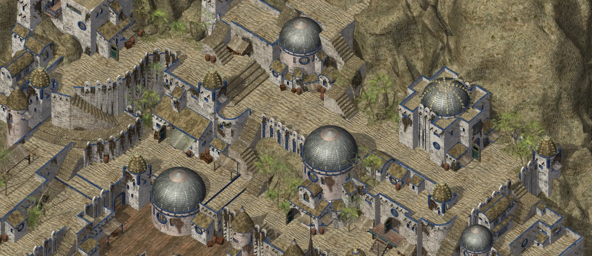

01
Monde & décors
Projet d’amélioration visuelle non officiel
Une amélioration visuelle méticuleuse de Baldur’s Gate II : Enhanced Edition — restaurer les décors, affiner l’animation et explorer ce que la mise à l’échelle moderne peut apporter à l’Infinity Engine.
Préserver la direction artistique d’origine
Le projet repose sur un principe : sublimer l’œuvre d’origine sans la redessiner. Chaque décor, chaque effet et chaque image est traité comme l’élément d’un ensemble peint à la main.
Restauration des décors
Les grands décors sont reconstruits à plus haute résolution, tandis que leur composition, leur ambiance et leur facture peinte restent la référence. Faites glisser le curseur ci-dessous pour entrevoir le résultat visé.
 Original ×1
Rehaussé ×4
Original ×1
Rehaussé ×4
AR0700 · Promenade de Waukeen · Jour · Cadrage 02 — captures x1 et x4 du projet, alignées.
Quatre disciplines liées

Monde & décors

Mouvement & effets
Piste de recherche
Au-delà de la résolution
Des ressources plus nettes n’ont d’intérêt que si le jeu reste agréable à jouer. Un travail technique parallèle étudie le chargement des cartes, la préparation des ressources et le comportement du rendu, tout en conservant des solutions de repli natives sûres.
Suivre l’avancement des performances